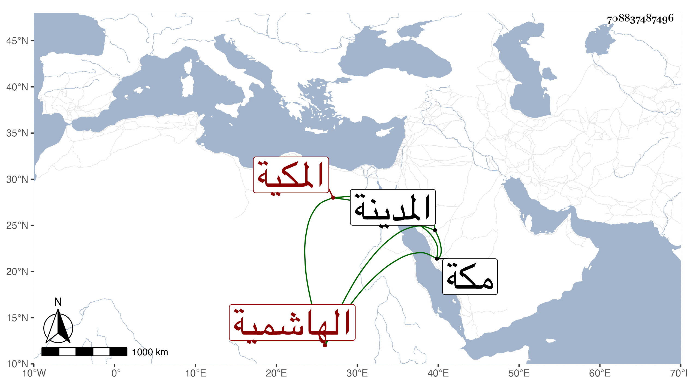

0902Sakhawi.DawLamic.ITO20230111-ara1.EIS1600.708837487496
Biography ID: 708837487496
991
أم هانئ ابنة التقي محمد بن النجم محمد بن أبي الخير محمد بن محمد بن عبد الله بن فهد الهاشمية المكية شقيقة النجم بن فهد واخوته وتسمى زينب ستي بني هاشم . ولدت في غروب يوم الخميس ثامن عشر ذي القعدة سنة سبع عشرة وثمانمائة بمكة وأحضرت بها في الثانية على الشريف أحمد الفاسي وابن سلامة مشيخة الفخر وغيرها ومن الجمال المرشدي بعضها وجزء ابن الطلاية والبردة وسمعت من الشمسين ابن الجزري والكناني مفترقين جميع مسند أحمد ومن عبد الرحمن بن طولوبغا المسلسل والمائة الفراوية وجملة في آخرين من شيوخ بلدها كالنجم المرجاني والقادمين عليها وبالمدينة من المحلى والشريف أبي عبد الله الفاسي المكي ، وأجاز لها خلق من أماكن شتى منهم الشهاب المتبولي والزراتيتي والشمس البرماوي والتاج والعلاء ابنا ابن بردس والنفيس العلوي والولي العراقي والفوي والزركشي وابنة الشرائحي والبرهان الحلبي ، وتزوجها الخطيب أبو القسم بن أبي الفضل النويري فولدت له المحب أبا البركات أحمد الماضي وطلقها فتزوجها القاضي أبو حامد ابن الضياء الحنفي فولدت له غياث الدين أبا الليث محمدا ، وأجازت لنا ، وكانت مباركة دينة كثيرة التودد والموافاة واحتمال الأذى . تعللت مدة إلى أن ماتت شهيدة بالبطن في أول يوم الخميس منتصف ذي الحجة سنة خمس وثمانين ودفنت في عصر يومها على أمها بقبول سلفها من المعلاة رحمها الله .
